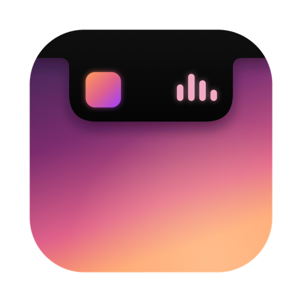
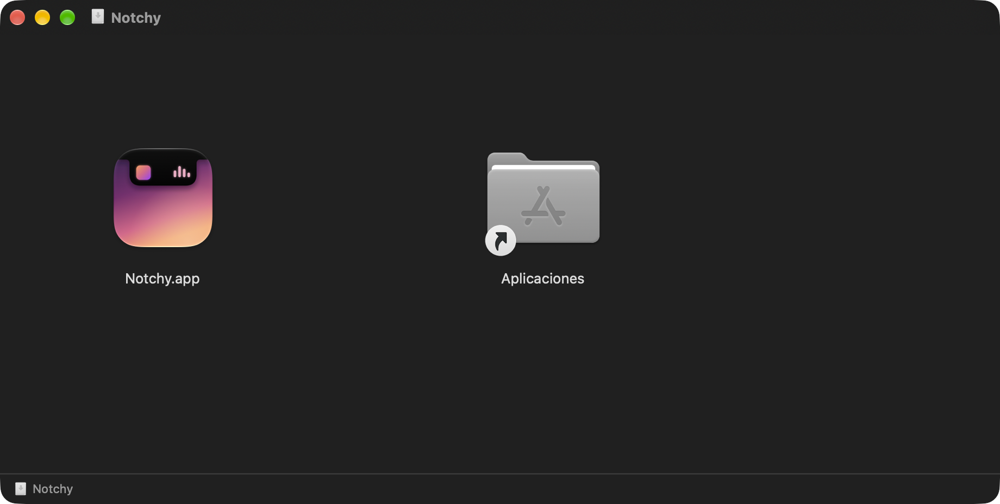
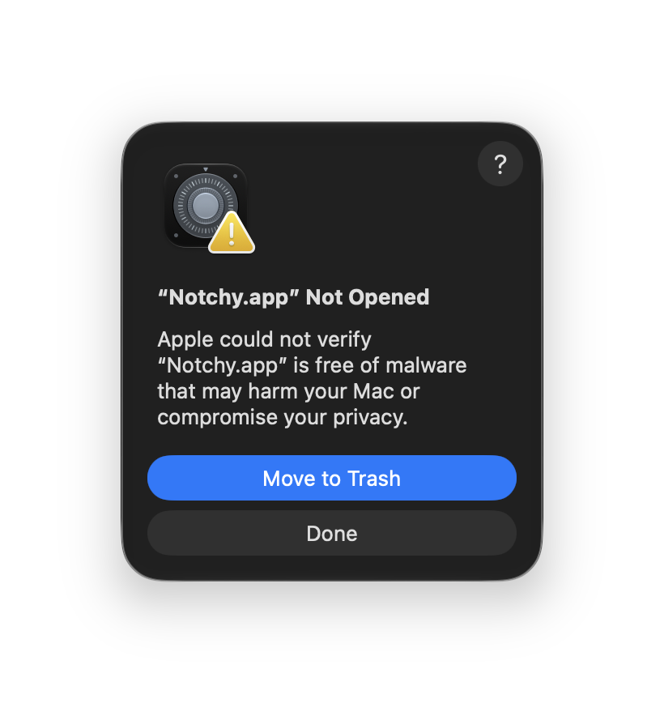
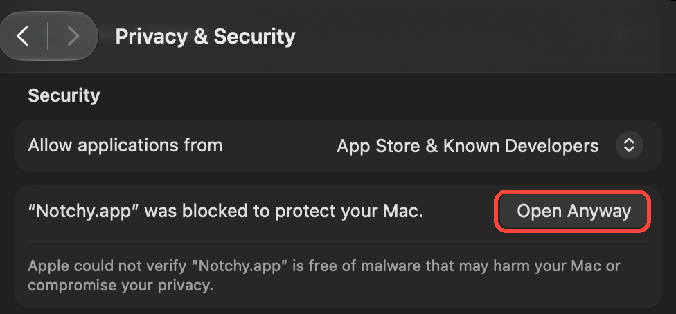
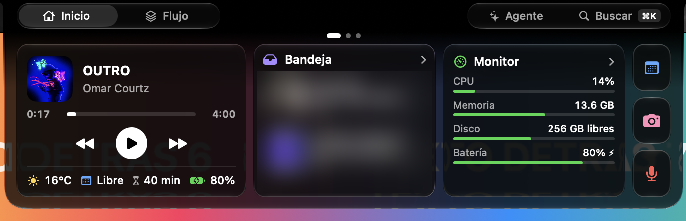

Notchy.dmg (la app) y este PDF
Copia Notchy.dmg a la otra Mac por AirDrop, una memoria USB o iCloud Drive. Cualquiera sirve. Déjalo en
Descargas o en el Escritorio.
Notchy.dmg. Se abre una ventana como esta.



macOS pregunta la primera vez que usas cada función. Acepta solo las que vayas a usar; las demás siguen funcionando sin ellas.
| Permiso | Para qué lo usa Notchy |
|---|---|
| Calendarios | Agenda del día en la isla. |
| Recordatorios | Pendientes de la lista “Obsidian”. |
| Micrófono, grabación de audio del sistema y reconocimiento de voz | Grabar y transcribir reuniones y notas de voz, todo en la Mac. |
| Cámara | El espejo del notch. |
| Carpeta Descargas | Avisar cuando llega algo por AirDrop. |
| Automatización (Música y Spotify) | Saber qué canción suena si falla el método principal. |
| Accesibilidad | Acomodar ventanas (módulo Window Snap). |
Si negaste uno y luego lo quieres: Ajustes del Sistema → Privacidad y seguridad → la categoría → activa Notchy.
Pasa a veces cuando el archivo llega por algunos navegadores o servicios de nube. Abre la app Terminal, pega esta línea, pulsa Intro y vuelve a abrir Notchy:
xattr -dr com.apple.quarantine /Applications/Notchy.app
Revisa los requisitos: chip de Apple y macOS 27 o posterior.
Pasa el cursor justo sobre el notch o usa ⌃⌥ Espacio. Si sigue sin aparecer, abre Monitor de Actividad y busca “Notchy”: si no está, ábrela otra vez desde Aplicaciones. En pantallas sin notch aparece como píldora bajo la barra de menús.
Solo se muestra durante una hora después de intentar abrirla. Repite el paso 3 y entra de inmediato a Privacidad y seguridad.
Sal de Notchy (clic derecho sobre la isla → Salir de Notchy) y repite los pasos 1 a 4. Al arrastrar a Aplicaciones elige Reemplazar. Tus ajustes y datos se conservan.
~/Library/Application Support/Notchy y manda esa carpeta a la Papelera.